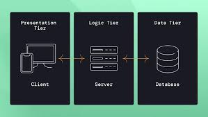

Multitiered Architectures in Distributed Systems explains how complex computer systems are organised into different layers or tiers to imporve perfomance and manageability. Each tier has a specific role such as handling user interactions, processing data or storing information.
The most common use of Multitierd architecture is the three-tier architecture, which separates Presentation, Application Provessing and Data Management functions often used to describe websites that comprise a front-end web-server serving static content and som cached dynamic content, a middle dynamic content processing and generation application server and a back-end dtabase or data store.

The presentation tier handles all user interactions but does not include any buisness logic. It is focused purely on displaying data and gathering inputs. This separation allows chnages to the interface without affecting the core application.
The application tier is reposnsible for processing data from the presentation tier and applying bsuinees logic. it acts as the middle layer, handling operations, worlflows and communication with the Data Tier.
The data tier is the foundation od the architecture, responsible for managing and storing data. This tier usually consists of databases but it can also include file storage systems, expernal APIs or cloud-based services.
By dividing tasks among these tiers, systems can run more efficiently, be more secure, and handle more users at once.
This architecture is widely used in modern applications like web services, where front-end interfaces, business logic, and databases are separated to enhance functionality and scalability.